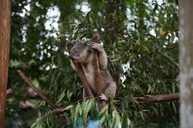

.jpg)

What is a Koala Bear?
Though often called the koala "bear," this cuddly animal is not a bear at all; it is a marsupial, or pouched mammal. After giving birth, a female koala carries her baby in her pouch for about six months. When the infant emerges, it rides on its mother's back or clings to her belly, accompanying her everywhere until it is about a year old.
What is their Habitat?
Koalas live in eastern Australia, where the eucalyptus trees they love are most plentiful. In fact, they rarely leave these trees, and their sharp claws and opposable digits easily keep them aloft. During the day they doze, tucked into forks or nooks in the trees, sleeping for up to 18 hours.
What do Koalas Eat?
When not asleep a koala feeds on eucalyptus leaves, especially at night. Koalas do not drink much water and they get most of their moisture from these leaves. Each animal eats a tremendous amount for its size—about two and a half pounds (one kilogram) of leaves a day. Koalas even store snacks of leaves in pouches in their cheeks. A special digestive system—a long gut—allows koalas to break down the tough eucalyptus leaves and remain unharmed by their poison. Koalas eat so many of these leaves that they take on a distinctive odor from their oil, reminiscent of cough drops.
Are they Endagered?
These plump, fuzzy mammals were widely hunted during the 1920s and 1930s, and their populations plunged. Helped by reintroduction, they have reappeared over much of their former range, but their populations are smaller and scattered. Koalas need a lot of space. About a hundred trees per animal is the pressing problem as Australia's woodlands continue to shrink.
Important Notes About Koala Bears
- Koalas can live as long as 17 years.
- Koalas prefer to move around after sunset, and spend most of the day sleeping.
- Koalas live in eastern Australia. They require large corridors of connected forest.
- The habitat of koalas is threatened by urbanization. Koalas live in eucalyptus tree forests.
- Koalas eat the eucalyptus leaves and most of the water in their diets comes from the leaves or water that is on the leaves.
Koalas Click the link below to view a fact sheet about Koala bears.
Fact Sheet